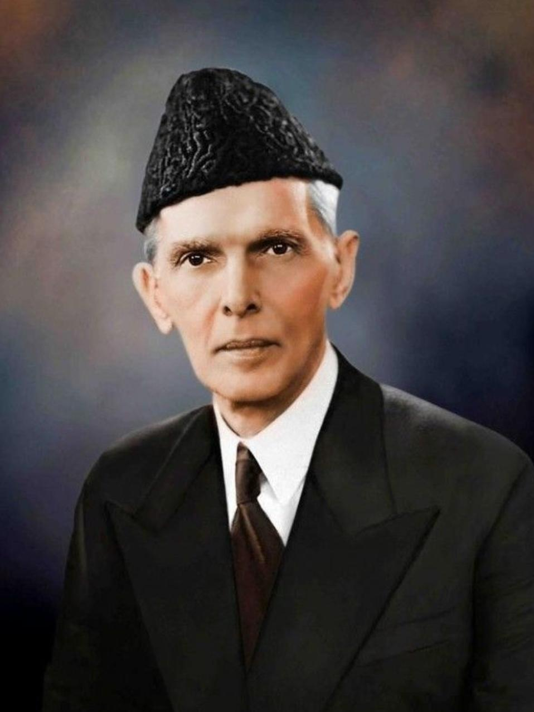

Quaid Azam
Muhammad Ali Jinnah

MOTO
FAITH , UNITY AND DISCIPLINE
About the Legend
- Muhammad Ali Jinnah is the founder of Pakistan. He was a great leader with an ambitious vision
for his people and their land, which he never stopped fighting to make happen – even from
behind prison bars in London during WWII! Born on December 25th, 1876, in Karachi
-
Muhammad Ali Jinnah fought for the freedom of the Muslims of the sub-continent. His
achievements were recognized by the title“Quaid-e-Azam” (the father of the nation) by Maulana
Mazharuddin.
-
As a member of the largest Indian political organization, Jinnah joined the Indian National
Congress in 1906. He then joined the Muslim League seven years later.
-
He tried hard to bring Congress and the Muslim League together, but he realized that under the
British and Hindus, the Muslims of the subcontinent were losing their cultural and social
freedoms.To create a state where Muslims could feel a sense of freedom, he began fighting for the
independence of Muslims in British India.
-
Pakistan was established due to the bloodshed of thousands of freedom fighters and Jinnah’s
leadership. The country wouldn’t have existed without him.
-
A man of his words, he was always as firm as a rock in the face of enemies and never faltered.
Gandhi’s title “Impossible Man” was given to Gandhi due to his determination over his policies.
-
In 1930, he became the authoritative leader of all the Muslims in the subcontinent, and he led the
Muslim League from 1933 to 1935.
-
The Muslim League wrote the Pakistan Resolution in Lahore in 1940, which was declared the
backbone of the struggle for an independent Pakistan.
-
His aggressive leadership and vigorous efforts resulted in Pakistan’s creation on August 14,
1947.
-
August 15, 1947, marked the first day of the rise of the independent state of Pakistan under
Quaid-e-Azam. The new responsibilities were like a bed of thrones to him.
-
Although he struggled with tuberculosis over the years, he never let it become a vulnerability,
and he died on September 11, 1948, just 13 months after our motherland was created.
For more information,
check out
“Quaid-e-Azam”
on Wikipedia.